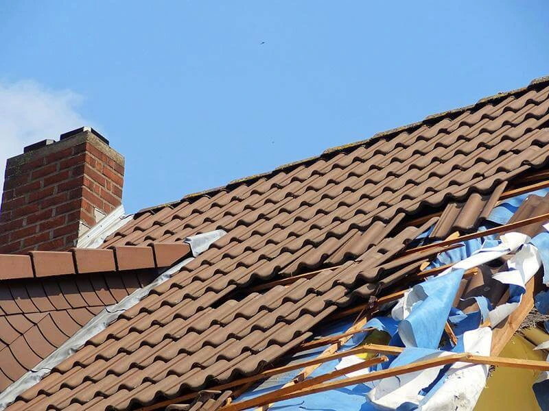
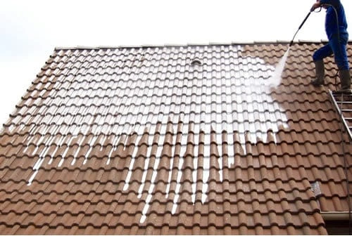
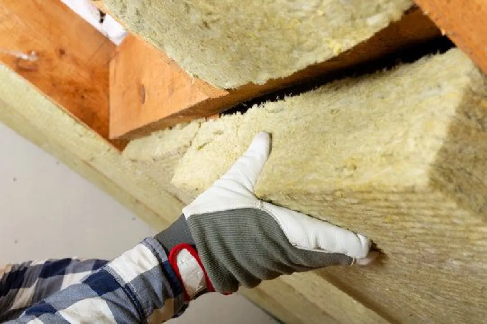
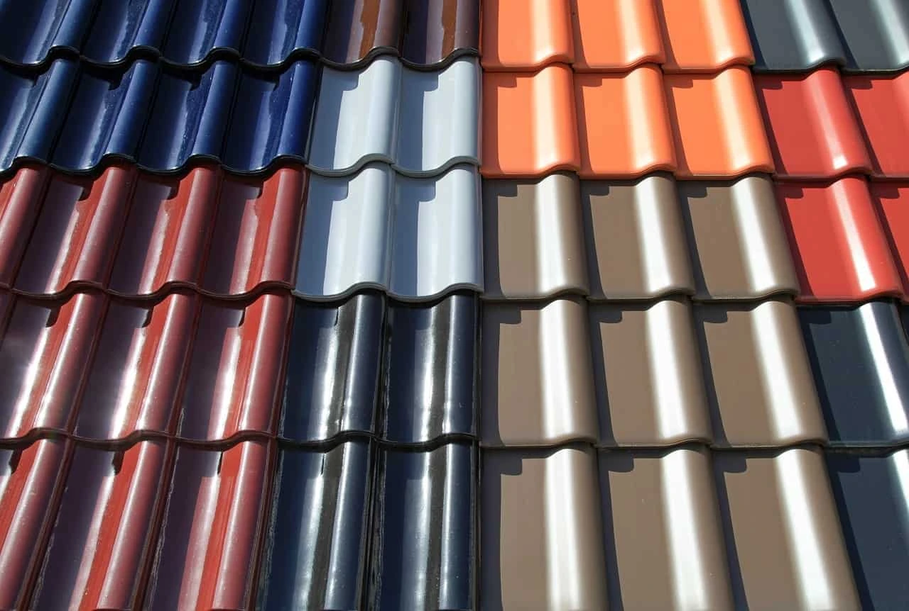
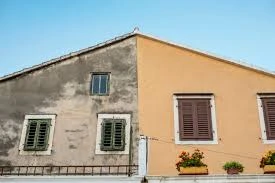
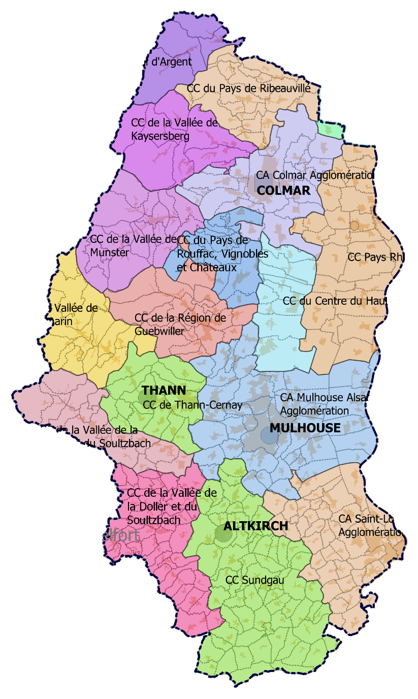

Remplacement de tuiles, réparation de fuite ou remise en état : votre couvreur dans le Haut-Rhin intervient rapidement pour garantir l'étanchéité et l'isolation de votre toiture.
En savoir plus +NOS SERVICES

Réparer votre toiture est essentiel pour éviter les infiltrations et préserver votre maison face aux intempéries. Que ce soit pour changer des tuiles cassées, stopper une fuite ou remettre en état des éléments abîmés, une intervention rapide est primordiale pour garantir l’étanchéité et la bonne isolation de votre toit.
EN SAVOIR PLUS
Entretenir votre toiture avec un nettoyage et un démoussage réguliers est indispensable pour conserver son esthétique et sa longévité. Au fil du temps, mousses, lichens et algues peuvent proliférer, augmentant les risques de dégradations et d'infiltrations.
EN SAVOIR PLUS
Une isolation efficace de la toiture est essentielle pour optimiser le confort thermique de votre habitation et diminuer vos dépenses énergétiques. Elle limite les déperditions de chaleur en hiver et aide à conserver la fraîcheur en été.
EN SAVOIR PLUS
Assurer l’étanchéité de votre toiture est indispensable pour prévenir les infiltrations d’eau et les dégâts qu’elles peuvent causer. Une toiture bien étanche garantit une protection optimale contre les intempéries et les fuites.
EN SAVOIR PLUS
Appliquer une peinture sur votre toiture est une excellente manière de rafraîchir son aspect tout en renforçant sa résistance aux éléments. En plus d’embellir votre maison, une peinture spécifique pour toitures protège contre les UV, l’humidité et les aléas climatiques.
EN SAVOIR PLUS
Installer des gouttières est essentiel pour une gestion optimale des eaux pluviales, protégeant ainsi les façades et les fondations de votre maison. Une gouttière correctement posée évacue l’eau de pluie loin du toit et des murs, réduisant les risques d’infiltration et de dégradation.
EN SAVOIR PLUS
Installer des fenêtres de toit Velux augmente la luminosité et la ventilation de vos combles, tout en apportant un atout esthétique à votre toiture. Ces fenêtres favorisent un éclairage naturel optimal et contribuent à une meilleure gestion de la température intérieure.
EN SAVOIR PLUS
Le ravalement de façade est essentiel pour préserver et améliorer l’apparence de votre bâtiment. Cette opération inclut le nettoyage, la réparation des fissures et l’application d’une nouvelle couche de peinture, offrant ainsi une protection contre les intempéries et l’usure.
EN SAVOIR PLUSLorsqu’une fuite de toiture survient, il est crucial d'intervenir sans délai pour prévenir des dommages importants. Les couvreurs spécialisés en urgences se déplacent rapidement pour identifier et réparer la fuite, offrant ainsi une protection immédiate contre les infiltrations d'eau.
EN SAVOIR PLUSLe nettoyage toiture protège durablement votre couverture. Démoussage et traitement hydrofuge éliminent mousses et lichens, limitent les infiltrations et prolongent la durée de vie de votre toiture.
En savoir plus +Une isolation de toiture performante réduit vos dépenses énergétiques et améliore votre confort thermique, en limitant les déperditions de chaleur en hiver et en conservant la fraîcheur en été.
En savoir plus +L'étanchéité de votre toiture prévient les infiltrations d'eau et protège durablement votre habitation. Des matériaux adaptés à votre type de toit assurent une protection fiable contre les intempéries.
En savoir plus +
La peinture de toiture redonne un coup de neuf à votre toit tout en renforçant sa résistance aux UV, à l'humidité et aux intempéries.
En savoir plus +Une gouttière correctement posée évacue les eaux pluviales loin de votre toiture et de vos murs, protégeant façades et fondations contre les infiltrations.
En savoir plus +
L'installation de fenêtres de toit Velux apporte luminosité naturelle et ventilation à vos combles, tout en valorisant votre toiture.
En savoir plus +En cas de fuite de toiture, nos couvreurs se déplacent en urgence pour localiser et réparer la fuite, stoppant immédiatement les infiltrations d'eau.
En savoir plus +Nettoyage, réparation des fissures et application d'un nouvel enduit : le ravalement de façade préserve et valorise durablement votre bâtiment.
En savoir plus +UNE EQUIPE PROFESSIONNELLE ET DES EQUIPEMENTS MODERNES
Au cœur de notre expertise en couverture, une équipe de professionnels qualifiés et des équipements de pointe assurent des solutions durables et efficaces. Chaque membre de notre équipe joue un rôle clé dans l’excellence de nos services, tandis que nos technologies avancées garantissent une performance optimale. Que ce soit pour la réparation de toiture, le nettoyage et démoussage, l’isolation ou l’étanchéité, nous proposons des solutions sur mesure pour répondre à vos besoins. Faites confiance à notre entreprise pour des prestations telles que la peinture de toiture, la pose de gouttières ou l’installation de fenêtres de toit. Notre engagement repose sur le professionnalisme et le savoir-faire pour protéger et prolonger la durée de vie de vos toitures.
Super promo

DALEP 2100
Produit 2 en 1 anti-mousse et hydrofuge professionnel
Offre exceptionnelle sur le nettoyage de toiture !
Bénéficiez d'un démoussage et nettoyage
réalisés par un couvreur qualifié. Nous utilisons le DALEP 2100, un produit
professionnel 2 en 1, anti-mousse et hydrofuge, pour assurer la durabilité de votre toiture.
NOS TARIFS
COMPÉTITIFS
Chez Couvreur 68, nous vous proposons des services de couverture de haute qualité à des prix compétitifs. Nous nous engageons à fournir des solutions adaptées à vos besoins, tout en respectant votre budget. Pour obtenir un devis personnalisé, vous pouvez remplir notre formulaire en ligne ou nous contacter directement au 07 80 29 25 59. Nous sommes disponibles pour répondre à toutes vos questions.
DEVIS GRATUITPOURQUOI CHOISIR Couvreur 68 POUR VOS TRAVAUX DANS LE HAUT-RHIN ?
Lorsque vous envisagez des travaux de couverture en Haut-Rhin, opter pour Couvreur 68, c’est choisir l’excellence et la sérénité. Notre entreprise se distingue par son engagement constant envers la qualité, la fiabilité et la satisfaction de ses clients dans le domaine de la couverture. Forts de nombreuses années d’expérience, nous avons su bâtir une solide réputation grâce au savoir-faire de notre équipe passionnée. Chez Couvreur 68, chaque projet de couverture, qu’il s’agisse de réparation, nettoyage, démoussage, isolation de toiture ou même de ravalement de façade, est réalisé avec le plus grand soin, de A à Z.
GARANTIE 10 ANS

Tous nos travaux de couverture, incluant la réparation, la rénovation et l'installation de toiture, bénéficient d'une garantie décennale. Cela signifie que vous êtes protégé pendant 10 ans après la réalisation des travaux, vous assurant ainsi de la solidité et de la qualité de nos prestations. Que ce soit pour la réparation d’une fuite de toiture, l’installation de fenêtres de toit Velux, ou une rénovation complète, vous pouvez avoir l’esprit serein, sachant que votre projet est couvert par notre garantie décennale, conformément aux normes en vigueur dans le bâtiment.
NOS CONTRATS VOUS LIBÈRENT DE TOUS SOUCIS

CONTRAT PONCTUELS
CONTRAT ANNUELS
Grâce à nos contrats de couverture sur mesure, vous pouvez réaliser vos travaux en toute sérénité. Chez Couvreur 68, nous savons à quel point il est important d'assurer la tranquillité d'esprit de nos clients, même pour des projets de couverture. Nos contrats sont élaborés pour garantir une totale transparence, en précisant chaque étape des travaux, les délais et les coûts associés, que ce soit pour des réparations ponctuelles ou un entretien régulier. Nous nous engageons à vous offrir un service fiable et de qualité, comprenant la réparation de toiture, le nettoyage et démoussage, l’isolation, l’étanchéité, ainsi que l’installation de gouttières et de fenêtres de toit.
ZONE D'INTERVENTION COUVREUR Haut-Rhin

Couvreur 68 est à votre disposition pour des interventions urgentes ou sur rendez-vous dans le Haut-Rhin (68) ainsi que dans les départements voisins. Contactez-nous au 07 80 29 25 59 ou remplissez notre formulaire de devis en ligne. Nous nous engageons à vous répondre dans les plus brefs délais. Mulhouse - Riedisheim - Brunstatt-Didenheim - Pfastatt - Illzach - Lutterbach - Kingersheim - Morschwiller-le-Bas - Sausheim - Richwiller - Rixheim - Zimmersheim - Bruebach - Flaxlanden - Eschentzwiller - Zillisheim - Hochstatt - Wittenheim - Habsheim - Baldersheim
L’ENTREPRISE DE COUVERTURE QUI VOUS SIMPLIFIE LA VIE
Couvreur 68, expert en couverture dans le Haut-Rhin depuis plus de 20 ans, intervient auprès des particuliers et des professionnels pour résoudre toutes les urgences liées aux toitures. Qu'il s'agisse de fuites, de réparations urgentes ou de problèmes d'isolation, nous garantissons une réactivité rapide et efficace.
En cas de défaillance de toiture, nous agissons immédiatement pour effectuer les réparations nécessaires : remplacement de tuiles, amélioration de l'étanchéité, installation de fenêtres de toit et pose de gouttières pour assurer une évacuation optimale des eaux pluviales. Nous proposons également des services de nettoyage et de démoussage pour prolonger la durée de vie de votre toit.
Couvreur 68 est disponible 24h/24 et 7j/7, y compris les weekends et jours fériés. En plus des interventions d'urgence, nous offrons des services de rénovation complète de toitures, d'isolation thermique et de maintenance préventive pour éviter tout dommage à l'avenir.
NOS VALEURS
QUALITÉ
SYNONYME DE PASSION
La règle d'or de notre entreprise est d'offrir à nos clients un travail de qualité. Le respect du savoir-faire, associé à une écoute attentive, est la clé pour garantir leur satisfaction et assurer des résultats durables.
PASSION
SYNONYME DE PLAISIR
La passion du travail se traduit par le plaisir de réaliser chaque projet. Une réalisation réussie est la clé d’un client satisfait. Chaque projet est unique et nécessite une personnalisation, qui débute par une écoute attentive et des conseils adaptés.
ENGAGEMENT
SYNONYME DE RESPECT
L’engagement mutuel repose sur le respect. Le respect des lieux et de vous-même garantit un travail effectué dans les meilleurs délais, afin que vous puissiez retrouver votre confort et vous sentir heureux dans vos locaux le plus rapidement possible.
CONFIANCE
SYNONYME DE SECURITÉ
La confiance dans une entreprise est le socle de la réussite. En écoutant les besoins de chacun et en offrant des conseils adaptés, nous créons un climat de confiance. Cette relation de confiance réciproque donne une valeur ajoutée à vos intérieurs, assurant un résultat qui répond parfaitement à vos attentes.